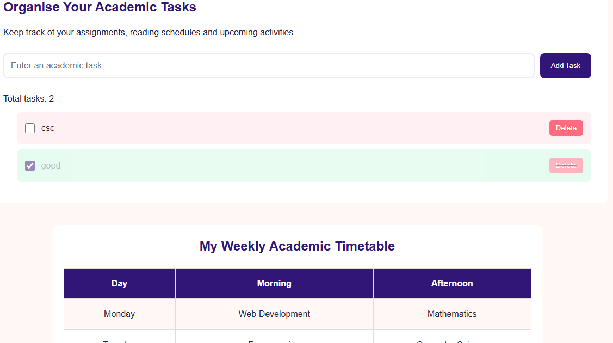

PROJECT 02 | JAVASCRIPT APPLICATION
Planning, Organising & Staying on Track
A simple and interactive academic planner designed to help students organise their responsibilities, track completed tasks and manage their academic activities more effectively.
Project Preview

About the Project
The Student Academic Planner is a task management application developed to make academic organisation easier. It provides students with a simple space to record important tasks, keep track of their progress and stay mindful of upcoming responsibilities.
The project combines a clean interface with interactive features that allow users to manage their tasks directly within the browser.
Technologies and Tools
Key Features
- Add new academic tasks.
- Mark completed tasks using checkboxes.
- Delete tasks that are no longer needed.
- Save tasks using browser Local Storage.
- View an academic timetable.
- Track task completion and stay organised.
My Role and Learning Experience
I designed and developed this application using HTML, CSS and JavaScript. I focused on creating a straightforward interface that makes task management easy to understand and use.
Working on this project improved my understanding of JavaScript functions, arrays, event handling and DOM manipulation. I also explored how Local Storage can retain information in a browser, making the application more useful.
Project Information
Project Type: Academic Task Management Application
My Role: Designer and Developer
Development Tools: VS Code and Google Chrome
Technologies: HTML, CSS and JavaScript
Status: Completed